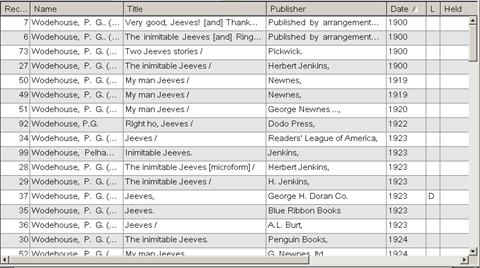

Contact
Princeton University Cataloging Documentation
Contact |
Princeton University Cataloging Documentation |
OCLC Return to OCLC main Customize lists Searching (doc)
|
Re-sort a truncated list Click any column heading to sort the list by that column For instance, click on the “Date” column heading: an arrow will appear and the list will re-sort by date, earliest to latest:  Click again on the “Date” column heading: the arrow will reverse
|
| ©2008 Princeton University Last Modified 09/03/2008 |